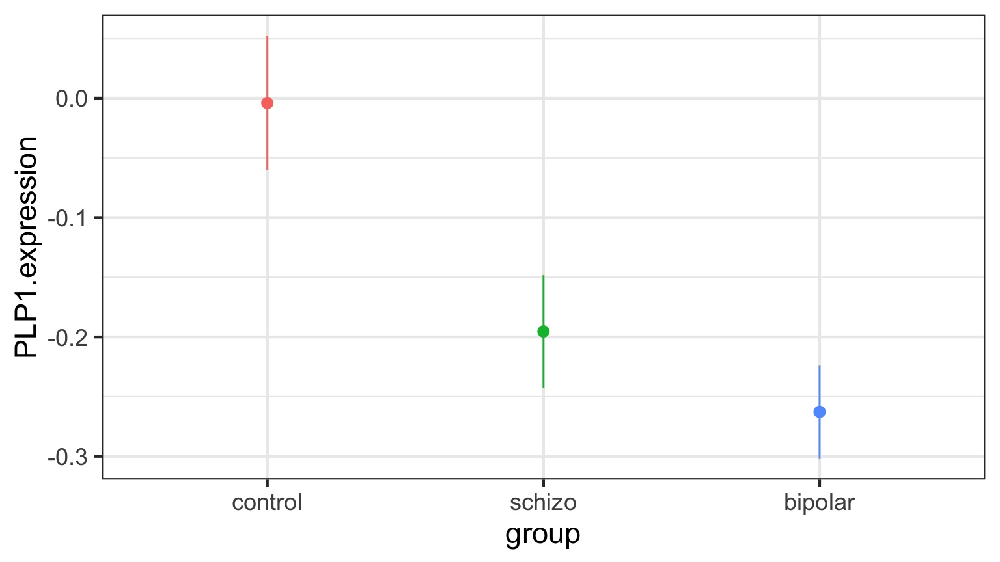
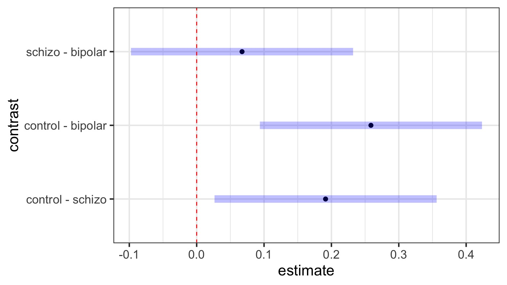

After the ANOVA
Outline
https://etherpad.wikimedia.org/p/607-anova- What can we ask of ANOVA?
- Looking at treatment means
- Tests of differences of means
Categorical Predictors: Gene Expression and Mental Disorders


The data

Comparison of Means

Means Model
\[\large y_{ij} = \alpha_{i} + \epsilon_{ij}, \qquad \epsilon_{ij} \sim N(0, \sigma^{2} )\]Questions we could ask
- Does your model explain variation in the data?
- Are your coefficients different from 0?
- How much variation is retained by the model?
- How confident can you be in model predictions?
- Are groups different from each other
Questions we could ask
- Does your model explain variation in the data?
- Are your coefficients different from 0?
- How much variation is retained by the model?
- How confident can you be in model predictions?
- Are groups different from each other
Testing the Model
Ho = The model predicts no variation in the data.
Ha = The model predicts variation in the data.
F-Tests
F = Mean Square Variability Explained by Model / Mean Square Error
DF for Numerator = k-1
DF for Denominator = n-k
k = number of groups, n = sample size
ANOVA
| Df | Sum Sq | Mean Sq | F value | Pr(>F) | |
|---|---|---|---|---|---|
| group | 2 | 0.5402533 | 0.2701267 | 7.823136 | 0.0012943 |
| Residuals | 42 | 1.4502267 | 0.0345292 | NA | NA |
Fitting an ANOVA model with Likelihood
\(\chi^2\) LR Test and ANOVA
| LR Chisq | Df | Pr(>Chisq) | |
|---|---|---|---|
| group | 15.64627 | 2 | 4e-04 |
This asks how much does the deviance change when we remove a suite of predictors from the model?
BANOVA
BANOVA: Compare the relative magnitudes of variability due to Treatments
| term | estimate | std.error | conf.low | conf.high |
|---|---|---|---|---|
| SD from Groups | 0.1396133 | 0.0340588 | 0.0740639 | 0.2094102 |
| SD from Residuals | 0.1860021 | 0.0046805 | 0.1815504 | 0.1957638 |
Or via Percentages:
| term | estimate | std.error | conf.low | conf.high |
|---|---|---|---|---|
| SD from Groups | 43.09062 | 6.148865 | 29.89045 | 52.81145 |
| SD from Residuals | 56.90938 | 6.148865 | 47.18855 | 70.10955 |
What if Treatment is relatively unimportant?
| term | estimate | std.error | conf.low | conf.high |
|---|---|---|---|---|
| group_sd | 0.3742119 | 0.2061628 | 0.0291503 | 0.7560807 |
| res_sd | 1.1878815 | 0.0494847 | 1.1421252 | 1.2808218 |
| term | estimate | std.error | conf.low | conf.high |
|---|---|---|---|---|
| group_sd | 22.86571 | 9.015793 | 4.387725 | 38.10253 |
| res_sd | 77.13429 | 9.015793 | 61.897473 | 95.61228 |
What if Treatment is relatively unimportant?
Questions we could ask
- Does your model explain variation in the data?
- Are your coefficients different from 0?
- How much variation is retained by the model?
- How confident can you be in model predictions?
- Are groups different from each other
Questions we could ask
- Does your model explain variation in the data?
- Are your coefficients different from 0?
- How much variation is retained by the model?
- How confident can you be in model predictions?
- Are groups different from each other
Outline
https://etherpad.wikimedia.org/p/607-anova- What can we ask of ANOVA?
- Looking at treatment means
- Tests of differences of means
ANOVA, F, and T-Tests
| F-Tests | T-Tests |
|---|---|
| Tests if data generating process different than error | Tests if parameter is different from 0 |
Essentially comparing a variation explained by a model with versus without a data generating process included.
The Coefficients
| Estimate | Std. Error | t value | Pr(>|t|) | |
|---|---|---|---|---|
| (Intercept) | -0.0040000 | 0.0479786 | -0.0833705 | 0.9339531 |
| groupschizo | -0.1913333 | 0.0678520 | -2.8198628 | 0.0073015 |
| groupbipolar | -0.2586667 | 0.0678520 | -3.8122186 | 0.0004442 |
Treatment contrasts - set one group as a baseline
Useful with a control
Default “Treatment” Contrasts
schizo bipolar
control 0 0
schizo 1 0
bipolar 0 1Actual Group Means Compared to 0
| contrast | estimate | SE | df | t.ratio | p.value |
|---|---|---|---|---|---|
| control effect | 0.1500000 | 0.0391744 | 42 | 3.829034 | 0.0012669 |
| schizo effect | -0.0413333 | 0.0391744 | 42 | -1.055112 | 0.2974062 |
| bipolar effect | -0.1086667 | 0.0391744 | 42 | -2.773922 | 0.0123422 |
But which groups are different from each other?
Many T-tests….mutiple comparisons!
Outline
https://etherpad.wikimedia.org/p/607-anova- What can we ask of ANOVA?
- Looking at treatment means
- Tests of differences of means
The Problem of Multiple Comparisons

Solutions to Multiple Comparisons and Family-wise Error Rate?
- Ignore it - a test is a test
- a priori contrasts
- Least Squares Difference test
- Lower your \(\alpha\) given m = # of comparisons
- Bonferroni \(\alpha/m\)
- False Discovery Rate \(k\alpha/m\) where k is rank of test
- Other multiple comparinson correction
- Tukey’s Honestly Significant Difference
ANOVA is an Omnibus Test
Remember your Null:
\[H_{0} = \mu_{1} = \mu{2} = \mu{3} = ...\]
This had nothing to do with specific comparisons of means.
A priori contrasts
Specific sets of a priori null hypotheses: \[\mu_{1} = \mu{2}\]
\[\mu_{1} = \mu{3} = ...\]
Use t-tests.
A priori contrasts
lm model parameter contrast
Contrast S.E. Lower Upper t df Pr(>|t|)
1 0.191 0.0679 0.0544 0.328 2.82 42 0.0073A priori contrasts
lm model parameter contrast
Contrast S.E. Lower Upper t df Pr(>|t|)
Control v. Schizo 0.191 0.0679 0.0544 0.328 2.82 42 0.0073
Control v. Bipolar 0.259 0.0679 0.1217 0.396 3.81 42 0.0004Note: can only do k-1 before thinking about FWER, as each takes 1df
Orthogonal A priori contrasts
Sometimes you want to test very specific hypotheses about the structure of your groups
control schizo bipolar
Control v. Disorders 1 -0.5 -0.5
Bipolar v. Schizo 0 1.0 -1.0Note: can only do k-1, as each takes 1df
Orthogonal A priori contrasts with Grouping
Simultaneous Tests for General Linear Hypotheses
Fit: lm(formula = PLP1.expression ~ group, data = brainGene)
Linear Hypotheses:
Estimate Std. Error t value Pr(>|t|)
Control v. Disorders == 0 0.2210 0.1018 2.17 0.07 .
Bipolar v. Schizo == 0 0.0673 0.0679 0.99 0.54
---
Signif. codes: 0 '***' 0.001 '**' 0.01 '*' 0.05 '.' 0.1 ' ' 1
(Adjusted p values reported -- single-step method)Post hoc contrasts
I want to test all possible comparisons!
No Correction: Least Square Differences
| contrast | estimate | SE | df | t.ratio | p.value |
|---|---|---|---|---|---|
| control - schizo | 0.191 | 0.068 | 42 | 2.820 | 0.007 |
| control - bipolar | 0.259 | 0.068 | 42 | 3.812 | 0.000 |
| schizo - bipolar | 0.067 | 0.068 | 42 | 0.992 | 0.327 |
P-Value Adjustments
Bonferroni : \(\alpha_{adj} = \frac{\alpha}{m}\) where m = # of tests
- VERY conservative
False Discovery Rate: \(\alpha_{adj} = \frac{k\alpha}{m}\)
- Order your p values from smallest to largest, rank = k,
- Adjusts for small v. large p values
- Less conservative
Other Methods: Sidak, Dunn, Holm, etc.
We’re very focused on p here!
Bonferroni Corrections
| contrast | estimate | SE | df | t.ratio | p.value |
|---|---|---|---|---|---|
| control - schizo | 0.191 | 0.068 | 42 | 2.820 | 0.022 |
| control - bipolar | 0.259 | 0.068 | 42 | 3.812 | 0.001 |
| schizo - bipolar | 0.067 | 0.068 | 42 | 0.992 | 0.980 |
p = m * p
FDR
| contrast | estimate | SE | df | t.ratio | p.value |
|---|---|---|---|---|---|
| control - schizo | 0.191 | 0.068 | 42 | 2.820 | 0.011 |
| control - bipolar | 0.259 | 0.068 | 42 | 3.812 | 0.001 |
| schizo - bipolar | 0.067 | 0.068 | 42 | 0.992 | 0.327 |
p = \(\frac{m}{k}\) * p
Other Methods Use Critical Values
Tukey’s Honestly Significant Difference
Dunnet’s Test for Comparison to Controls
Ryan’s Q (sliding range)
etc…
Tukey’s Honestly Significant Difference
| contrast | estimate | SE | df | t.ratio | p.value |
|---|---|---|---|---|---|
| control - schizo | 0.191 | 0.068 | 42 | 2.820 | 0.020 |
| control - bipolar | 0.259 | 0.068 | 42 | 3.812 | 0.001 |
| schizo - bipolar | 0.067 | 0.068 | 42 | 0.992 | 0.586 |
Visualizing Comparisons (Tukey)

Dunnett’s Comparison to Controls
| contrast | estimate | SE | df | t.ratio | p.value |
|---|---|---|---|---|---|
| schizo - control | -0.191 | 0.068 | 42 | -2.82 | 0.014 |
| bipolar - control | -0.259 | 0.068 | 42 | -3.81 | 0.001 |

Likelihood and Posthocs
| group | emmean | SE | df | asymp.LCL | asymp.UCL |
|---|---|---|---|---|---|
| control | -0.004 | 0.048 | Inf | -0.098 | 0.090 |
| schizo | -0.195 | 0.048 | Inf | -0.289 | -0.101 |
| bipolar | -0.263 | 0.048 | Inf | -0.357 | -0.169 |
Posthocs Use Z-tests
| contrast | estimate | SE | df | z.ratio | p.value |
|---|---|---|---|---|---|
| control - schizo | 0.191 | 0.068 | Inf | 2.820 | 0.013 |
| control - bipolar | 0.259 | 0.068 | Inf | 3.812 | 0.000 |
| schizo - bipolar | 0.067 | 0.068 | Inf | 0.992 | 0.582 |
Bayes-Style!
| group | emmean | lower.HPD | upper.HPD |
|---|---|---|---|
| control | -0.003 | -0.100 | 0.091 |
| schizo | -0.195 | -0.288 | -0.095 |
| bipolar | -0.263 | -0.362 | -0.163 |
Bayes-Style!
Final Notes of Caution
Often you DO have a priori contrasts in mind
If you reject Ho with ANOVA, differences between groups exist
Consider Type I v. Type II error before correcting